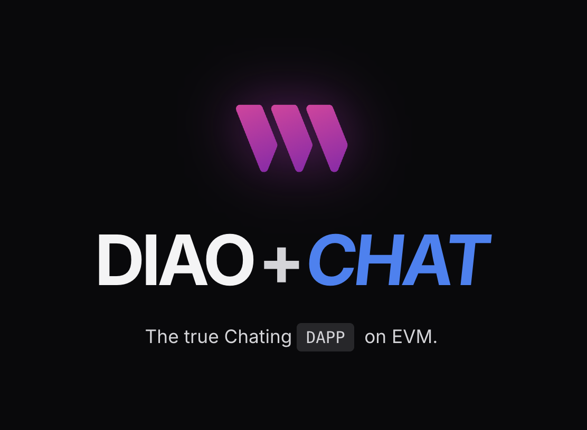

Function Inversion Research
Implemented RainbowCrack-based subset sum inversion inspired by Fiat–Naor, validating 99.5% recovery accuracy and matching theoretical complexity bounds.
Software Engineer · NYU Courant MSCS
Passionate software engineer with expertise in blockchain, full-stack development, data analysis, and financial technology. Currently pursuing my Master's degree in Computer Science at NYU Courant Institute, with a strong foundation in algorithms, machine learning, and cryptography. I have hands-on experience in financial technology and database management, along with a proven track record in developing innovative projects including decentralized applications and interactive educational tools.

Featured Work · 2024 → 2025
DIAO CHAT lets wallet holders trade playful messages with wallet-only identities. Today’s build ships wallet login, low-friction onboarding, and on-chain proofs. I’m actively rolling out the full end-to-end crypto layer so conversations stay sealed—coming in the next release.
Projects & Research
Implemented RainbowCrack-based subset sum inversion inspired by Fiat–Naor, validating 99.5% recovery accuracy and matching theoretical complexity bounds.
WebGL playground for Courant's graphics syllabus with multi-light scenes and normal mapping demos so students can manipulate concepts hands-on.
Open site →Full-stack coursework project delivering flight booking, admin tooling, and audited data pipelines with clean CSS/UI and robust backend tests.
Experience
Owned internal network + frontend test plans, surfaced vulnerabilities, and shipped clear playbooks for the engineering team. Partnered with quant researchers to shape a financial status modeling tool and translated messy datasets into concise research briefs.
Rebuilt the database management stack with MySQL + Java, cutting retrieval latency and tightening validation accuracy. Modeled a graph database for core company entities so analysts could trace relationships and surface insights faster.
Writing & Notes
Exploring style enforcement across smart-contract repos and why consistent formatting prevents tooling bugs.
Draft in progress
Learnings from testing the messaging DApp with non-crypto native students and reducing failed tx rates.
Draft in progress
Open to research collaborations, product engineering roles, or helping you prototype blockchain-native experiences.